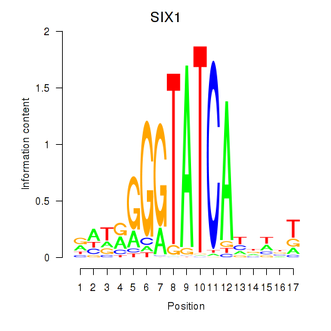
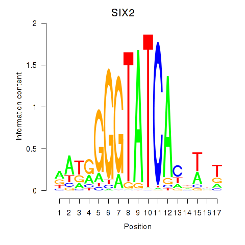
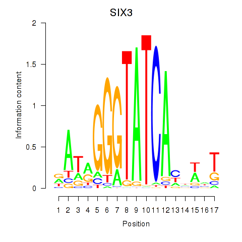

Motif ID: SIX1_SIX3_SIX2
Z-value: 0.540



Transcription factors associated with SIX1_SIX3_SIX2:
| Gene Symbol | Entrez ID | Gene Name |
|---|---|---|
| SIX1 | ENSG00000126778.7 | SIX1 |
| SIX2 | ENSG00000170577.7 | SIX2 |
| SIX3 | ENSG00000138083.3 | SIX3 |
![](http://string-db.org/api/image/network?network_flavor=evidence&limit=0&species=9606&caller_identity=MARA&identifiers=9606.ENSP00000251473%0D9606.ENSP00000285046%0D9606.ENSP00000371432%0D9606.ENSP00000334308%0D9606.ENSP00000367208%0D9606.ENSP00000318867%0D9606.ENSP00000357810%0D9606.ENSP00000337168%0D9606.ENSP00000216455%0D9606.ENSP00000443634%0D9606.ENSP00000376317%0D9606.ENSP00000302222%0D9606.ENSP00000362629%0D9606.ENSP00000329995%0D9606.ENSP00000360988%0D9606.ENSP00000358131%0D9606.ENSP00000244289%0D9606.ENSP00000331327%0D9606.ENSP00000334128%0D9606.ENSP00000251507%0D9606.ENSP00000292475%0D9606.ENSP00000360829%0D9606.ENSP00000333024%0D9606.ENSP00000415774%0D9606.ENSP00000378782%0D9606.ENSP00000457733%0D9606.ENSP00000354677%0D9606.ENSP00000413234%0D9606.ENSP00000259154%0D9606.ENSP00000356355%0D9606.ENSP00000331636%0D9606.ENSP00000010404%0D9606.ENSP00000297325%0D9606.ENSP00000324172%0D9606.ENSP00000300773%0D9606.ENSP00000297151%0D9606.ENSP00000368144%0D9606.ENSP00000312436%0D9606.ENSP00000457715%0D9606.ENSP00000290871%0D9606.ENSP00000307860%0D9606.ENSP00000351926%0D9606.ENSP00000274712%0D9606.ENSP00000297534%0D9606.ENSP00000360608%0D9606.ENSP00000414712%0D9606.ENSP00000365198%0D9606.ENSP00000399679%0D9606.ENSP00000325681%0D9606.ENSP00000400168%0D9606.ENSP00000305839%0D9606.ENSP00000420854%0D9606.ENSP00000428858%0D9606.ENSP00000331572%0D9606.ENSP00000331471%0D9606.ENSP00000365338%0D9606.ENSP00000343118%0D9606.ENSP00000219794%0D9606.ENSP00000256785%0D9606.ENSP00000459216%0D9606.ENSP00000336721%0D9606.ENSP00000397879%0D9606.ENSP00000428417%0D9606.ENSP00000350310%0D9606.ENSP00000320898%0D9606.ENSP00000354581%0D9606.ENSP00000274031%0D9606.ENSP00000361014%0D9606.ENSP00000449535%0D9606.ENSP00000402058%0D9606.ENSP00000331921%0D9606.ENSP00000359686%0D9606.ENSP00000394700%0D9606.ENSP00000350881%0D9606.ENSP00000315098%0D9606.ENSP00000428878%0D9606.ENSP00000355517%0D9606.ENSP00000308782%0D9606.ENSP00000376432%0D9606.ENSP00000262061%0D9606.ENSP00000271139%0D9606.ENSP00000288199%0D9606.ENSP00000314544%0D9606.ENSP00000346275%0D9606.ENSP00000263640%0D9606.ENSP00000222812%0D9606.ENSP00000457748%0D9606.ENSP00000385739%0D9606.ENSP00000229729%0D9606.ENSP00000331545%0D9606.ENSP00000382260%0D9606.ENSP00000415183%0D9606.ENSP00000377954%0D9606.ENSP00000426120%0D9606.ENSP00000361835%0D9606.ENSP00000258457%0D9606.ENSP00000349931%0D9606.ENSP00000316909%0D9606.ENSP00000252595%0D9606.ENSP00000450995%0D9606.ENSP00000347005)
{kind=link}
{kind=link}
{kind=link}
{kind=link}
Top targets:
Gene overrepresentation in biological_process category:
| Log-likelihood per target | Total log-likelihood | Term | Description |
|---|---|---|---|
| 0.1 | 0.3 | GO:0072299 | negative regulation of metanephric glomerulus development(GO:0072299) negative regulation of metanephric glomerular mesangial cell proliferation(GO:0072302) |
| 0.0 | 0.1 | GO:0001579 | medium-chain fatty acid transport(GO:0001579) |
| 0.0 | 0.1 | GO:0006429 | glutaminyl-tRNA aminoacylation(GO:0006425) leucyl-tRNA aminoacylation(GO:0006429) |
| 0.0 | 0.0 | GO:0007398 | ectoderm development(GO:0007398) |
| 0.0 | 0.1 | GO:1900126 | negative regulation of hyaluronan biosynthetic process(GO:1900126) |
| 0.0 | 0.2 | GO:0071947 | protein deubiquitination involved in ubiquitin-dependent protein catabolic process(GO:0071947) |
| 0.0 | 0.1 | GO:0043449 | cellular alkene metabolic process(GO:0043449) |
| 0.0 | 0.1 | GO:0046340 | diacylglycerol catabolic process(GO:0046340) |
| 0.0 | 0.1 | GO:0048925 | lateral line system development(GO:0048925) |
| 0.0 | 0.1 | GO:0071449 | cellular response to lipid hydroperoxide(GO:0071449) |
| 0.0 | 0.1 | GO:0010701 | positive regulation of norepinephrine secretion(GO:0010701) |
| 0.0 | 0.1 | GO:0030186 | melatonin metabolic process(GO:0030186) melatonin biosynthetic process(GO:0030187) |
| 0.0 | 0.1 | GO:0045163 | clustering of voltage-gated potassium channels(GO:0045163) |
| 0.0 | 0.1 | GO:0072752 | cellular response to rapamycin(GO:0072752) |
| 0.0 | 0.3 | GO:0034058 | endosomal vesicle fusion(GO:0034058) |
| 0.0 | 0.1 | GO:0070408 | carbamoyl phosphate metabolic process(GO:0070408) carbamoyl phosphate biosynthetic process(GO:0070409) response to ammonia(GO:1903717) cellular response to ammonia(GO:1903718) |
| 0.0 | 0.1 | GO:0003274 | endocardial cushion fusion(GO:0003274) |
| 0.0 | 0.0 | GO:0060557 | positive regulation of vitamin metabolic process(GO:0046136) positive regulation of vitamin D biosynthetic process(GO:0060557) positive regulation of calcidiol 1-monooxygenase activity(GO:0060559) |
| 0.0 | 0.0 | GO:0033214 | iron assimilation(GO:0033212) iron assimilation by chelation and transport(GO:0033214) positive regulation of bone mineralization involved in bone maturation(GO:1900159) negative regulation of tumor necrosis factor (ligand) superfamily member 11 production(GO:2000308) |
| 0.0 | 0.1 | GO:0038161 | prolactin signaling pathway(GO:0038161) |
| 0.0 | 0.2 | GO:0018026 | peptidyl-lysine monomethylation(GO:0018026) |
| 0.0 | 0.0 | GO:1902161 | positive regulation of cyclic nucleotide-gated ion channel activity(GO:1902161) |
| 0.0 | 0.0 | GO:1900138 | negative regulation of phospholipase A2 activity(GO:1900138) |
| 0.0 | 0.3 | GO:0090286 | cytoskeletal anchoring at nuclear membrane(GO:0090286) |
| 0.0 | 0.0 | GO:1903966 | monounsaturated fatty acid metabolic process(GO:1903964) monounsaturated fatty acid biosynthetic process(GO:1903966) |
| 0.0 | 0.0 | GO:0003147 | neural crest cell migration involved in heart formation(GO:0003147) anterior neural tube closure(GO:0061713) |
| 0.0 | 0.1 | GO:0030579 | ubiquitin-dependent SMAD protein catabolic process(GO:0030579) |
Gene overrepresentation in cellular_component category:
| Log-likelihood per target | Total log-likelihood | Term | Description |
|---|---|---|---|
| 0.0 | 0.1 | GO:0070702 | inner mucus layer(GO:0070702) outer mucus layer(GO:0070703) |
| 0.0 | 0.3 | GO:0033263 | CORVET complex(GO:0033263) |
| 0.0 | 0.3 | GO:0019773 | proteasome core complex, alpha-subunit complex(GO:0019773) |
| 0.0 | 0.1 | GO:0097451 | glial limiting end-foot(GO:0097451) |
| 0.0 | 0.1 | GO:0048179 | activin receptor complex(GO:0048179) |
| 0.0 | 0.1 | GO:0070044 | synaptobrevin 2-SNAP-25-syntaxin-1a complex(GO:0070044) |
| 0.0 | 0.1 | GO:0005947 | mitochondrial alpha-ketoglutarate dehydrogenase complex(GO:0005947) |
| 0.0 | 0.1 | GO:0042272 | nuclear RNA export factor complex(GO:0042272) |
| 0.0 | 0.3 | GO:0034993 | microtubule organizing center attachment site(GO:0034992) LINC complex(GO:0034993) |
Gene overrepresentation in molecular_function category:
| Log-likelihood per target | Total log-likelihood | Term | Description |
|---|---|---|---|
| 0.1 | 0.3 | GO:0044729 | hemi-methylated DNA-binding(GO:0044729) |
| 0.0 | 0.1 | GO:0033878 | hormone-sensitive lipase activity(GO:0033878) |
| 0.0 | 0.1 | GO:0004819 | glutamine-tRNA ligase activity(GO:0004819) leucine-tRNA ligase activity(GO:0004823) |
| 0.0 | 0.1 | GO:0032184 | SUMO polymer binding(GO:0032184) |
| 0.0 | 0.1 | GO:0000386 | second spliceosomal transesterification activity(GO:0000386) |
| 0.0 | 0.1 | GO:0005503 | all-trans retinal binding(GO:0005503) |
| 0.0 | 0.1 | GO:0004925 | prolactin receptor activity(GO:0004925) |
| 0.0 | 0.1 | GO:0015272 | ATP-activated inward rectifier potassium channel activity(GO:0015272) |
| 0.0 | 0.0 | GO:0030272 | 5-formyltetrahydrofolate cyclo-ligase activity(GO:0030272) |
| 0.0 | 0.1 | GO:0005250 | A-type (transient outward) potassium channel activity(GO:0005250) ER retention sequence binding(GO:0046923) |
| 0.0 | 0.0 | GO:0019166 | trans-2-enoyl-CoA reductase (NADPH) activity(GO:0019166) |
| 0.0 | 0.1 | GO:0004087 | carbamoyl-phosphate synthase (ammonia) activity(GO:0004087) carbamoyl-phosphate synthase (glutamine-hydrolyzing) activity(GO:0004088) |
| 0.0 | 0.1 | GO:0004514 | nicotinate-nucleotide diphosphorylase (carboxylating) activity(GO:0004514) |
| 0.0 | 0.2 | GO:1990380 | Lys48-specific deubiquitinase activity(GO:1990380) |
| 0.0 | 0.0 | GO:0005260 | channel-conductance-controlling ATPase activity(GO:0005260) |
| 0.0 | 0.0 | GO:0022865 | transmembrane electron transfer carrier(GO:0022865) |
Gene overrepresentation in C2:CP:REACTOME category:
| Log-likelihood per target | Total log-likelihood | Term | Description |
|---|---|---|---|
| 0.0 | 0.2 | REACTOME_SYNTHESIS_OF_BILE_ACIDS_AND_BILE_SALTS_VIA_24_HYDROXYCHOLESTEROL | Genes involved in Synthesis of bile acids and bile salts via 24-hydroxycholesterol |
|
|
|
|